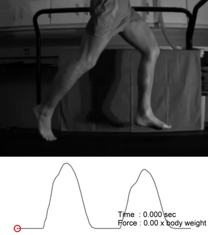
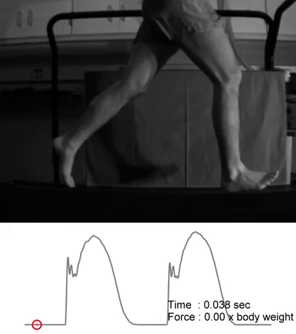
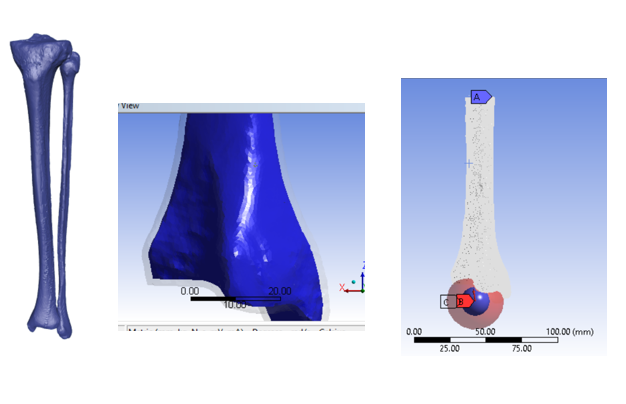
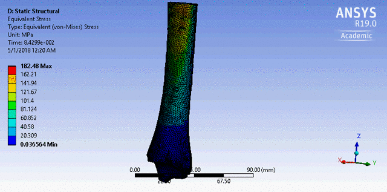

Overview
The biomechanics and load conditions while running can vary wildly depending on the runner's style of gait. This project analyzes if these different loading conditions contribute to stress fractures in the tibia through Finite Element Analysis (FEA) simulations.


FEA Simulation
With ANSYS, simulated the tibia with a multi-material viscoelastic model, applying different material properties for the cortical and cancellous bone. Modeled different loading conditions for the heel vs forefoot strike.

Results
Heel Strike had higher impluse forces than forefoot strike, causing significantly greater Equivalent Stress and fatigue on the tibia over 10,000 loading cycles. Notably, this was still not high enough to cause a stress fracture.
